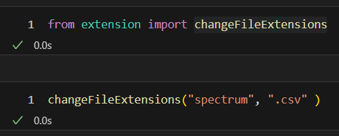
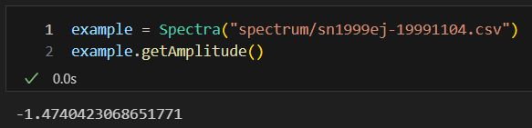

How to use the function and class methods
changeFileExtensions
This function renames all files in a folder by changing their extensions to a desired one.
Args: folderPath (str): The path to the folder containing the files to be renamed. newFileType (str): The new file extension (including the dot). For example: '.csv'
Source code in extension.py
4 5 6 7 8 9 10 11 12 13 14 15 16 17 18 19 | |

changeFileExtensions function. "Spectrum" is a folder name in which there are spectra files.__init__
This initializes Spectra class.
Args: filePath (str): Path to a csv file. cutOffLeft (int): Beginning of a Silicon absorption line. This is the minimum value of the x-axis of the Gaussian fit. cutOffRight (int): End of a Silicon absorption line.
Source code in spectra.py
10 11 12 13 14 15 16 17 18 19 20 | |

cutOffLeft and cutOffRight that are suitable for each spectrum. Spectrum can be obtained with getSpectra attribute. The default values are 6020 and 6420.
fit
This fits the data with Gaussian function. Args: xdata (list): Independent variable of the data to fit. ydata (list): Dependent variable of the data to fit.
Source code in spectra.py
110 111 112 113 114 115 116 117 118 119 120 121 122 123 124 125 | |
gauss
This is a Gaussian function. It takes an independent variable as the first argument and the parameters to fit as separate remaining arguments. Args: x (list): Independent variable of the Gaussian function. offset (float): Offset of the gaussian function. A (float): Amplitude of the gaussian function. mu (float): Mean of the x values. sigma (flaot): Standard deviation of the x values.
Source code in spectra.py
127 128 129 130 131 132 133 134 135 136 137 | |
readData
This reads a csv file.
Source code in spectra.py
22 23 24 25 26 27 28 29 30 31 32 33 34 35 36 37 | |
getSpectra
This plots the whole spectrum given by the data.
Args: spectrumPath (str): Specify a path to save the spectrum plot if needed.
Source code in spectra.py
39 40 41 42 43 44 45 46 47 48 49 50 51 52 53 54 55 | |
getFit
This plots the spectrum given by the data for wavelengths between cutOffLeft and cutOffRight, as well as the Gaussian fit.
Args: fitPath (str): Specify a path to save the fit and spectrum plot if needed.
Source code in spectra.py
57 58 59 60 61 62 63 64 65 66 67 68 69 70 71 72 73 74 75 76 77 | |
An example output is on Tutorial.
getAmplitude
This gives the amplitude of the Gaussian fit.
Source code in spectra.py
85 86 87 88 89 | |

getAmplitude attribute and the output.getMean
This gives the mean of the Gaussian fit.
Source code in spectra.py
91 92 93 94 95 | |
getSigma
This gives the standard deviation of the Gaussian fit.
Source code in spectra.py
104 105 106 107 108 | |
getOffset
This gives the offset of the Gaussian fit from the y-axis.
Source code in spectra.py
79 80 81 82 83 | |
getFWHM
This gives the FWHM of the Gaussian fit.
Source code in spectra.py
97 98 99 100 101 102 | |